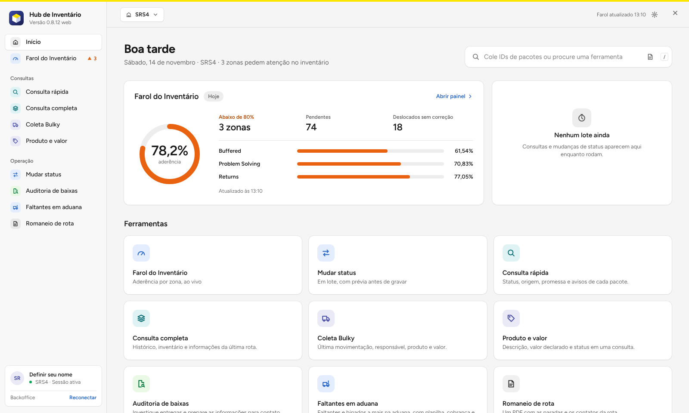

- 01Instalar o Tampermonkey
- 02Liberar scripts
- 03Adicionar o script do Hub
- 04Abrir o Hub no envios
- 05Instalar como aplicativo
- 06Atualizar
- ?Algo deu errado
Instale o Tampermonkey
- Abra a página do Tampermonkey nos Complementos do Edge.
Abrir a página do Tampermonkey ↗ - Clique em Obter e depois em Adicionar extensão.
- Deixe o ícone à vista: clique na peça de quebra-cabeça, na barra do Edge, e no olho ao lado de Tampermonkey.
O Tampermonkey é a extensão que deixa o Edge rodar o Hub dentro do envios.
Libere os scripts de usuário
- Copie este endereço e cole na barra de endereço do Edge. Ele não abre por clique.
edge://extensions - Ligue a chave Modo do desenvolvedor, na lateral da página.
- Se o envios já estava aberto, recarregue a aba (tecla F5).
Sem este passo o Hub não aparece. É uma exigência do Edge para qualquer script. Em versões novas do Edge também serve ligar Permitir scripts de usuário nos detalhes do Tampermonkey.
Adicione o script do Hub
- Clique no botão abaixo.
Instalar a versão Web ↗ - O Tampermonkey abre uma aba com o nome Hub de Inventário (Web). Clique em Instalar.
- A aba fecha sozinha. O script já está no seu Edge.
Apareceu uma página cheia de código, sem botão Instalar? O Tampermonkey não está instalado ou está desligado. Volte ao passo 1.
Abra o Hub no envios
- Abra o Inventário do envios e entre com o seu login, se ele pedir.
Abrir o Inventário ↗ - No canto de baixo, à direita, aparece o botão Hub. Clique nele.
- O Hub abre por cima da página. Para voltar ao envios, clique no X no alto à direita.
O botão aparece em qualquer página do envios. Na primeira vez, se o Backoffice pedir login, o Hub abre uma aba: entre lá e volte, que ele percebe sozinho.

Instale como aplicativo
- Com o Inventário do envios aberto e o botão Hub já na tela, clique nos três pontos ··· no alto à direita do Edge.
- Vá em Aplicativos (em alguns computadores aparece Apps) e clique em Instalar este site como um aplicativo.
- O nome já vem Hub de Inventário. Clique em Instalar.
- Marque Fixar na barra de tarefas e confirme.
Daí em diante o Hub tem ícone próprio, abre numa janela só dele e já entra direto, sem passar pelo botão.
Atualize com dois cliques
- O Hub avisa: “A versão … está pronta”. Clique em Atualizar agora.
- Abre uma aba do Tampermonkey. Clique em Atualizar.
- Volte para a aba do Hub. Ele recarrega sozinho, já na versão nova, e mostra o que mudou.
Se você não clicar, o Tampermonkey atualiza o script sozinho de tempos em tempos.
Algo deu errado?
O botão Hub não aparece no envios
Confira nesta ordem e recarregue a página (tecla F5) depois de cada item:
- Você está no Edge e num endereço que começa com envios.adminml.com.
- O Modo do desenvolvedor está ligado (passo 2).
- Clique no ícone do Tampermonkey: Hub de Inventário (Web) precisa aparecer na lista, com a chave ligada.
- Se o script não está na lista, refaça o passo 3.
O Tampermonkey mostra um aviso sobre o modo de desenvolvedor
Falta o passo 2. Abra edge://extensions, ligue o Modo do desenvolvedor e recarregue o envios.
Cliquei em “Instalar a versão Web” e abriu uma página de código
O Edge abriu o script como texto porque o Tampermonkey não está instalado ou está desligado. Faça os passos 1 e 2 e clique de novo.
O aplicativo abre o envios, e não o Hub
Clique no botão Hub, no canto de baixo. Se acontecer sempre, o aplicativo foi instalado a partir de outra página: desinstale (três pontos da janela do aplicativo, Configurações do aplicativo, Desinstalar) e refaça o passo 5 com o Inventário aberto.
O Hub pediu login de novo
A sessão do envios venceu, como acontece no próprio envios. Entre normalmente: o Hub volta sozinho quando o login terminar. Ele não lê nem guarda a sua senha.
Onde ficam as planilhas e os arquivos que o Hub gera?
Na pasta Downloads do computador, como qualquer download do Edge.
Meu computador passou a aceitar o instalador ou a Store
Prefira o aplicativo: ele se atualiza sem nenhum clique e não depende do Edge. Veja as outras formas de instalar.